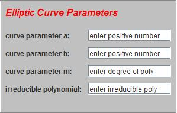
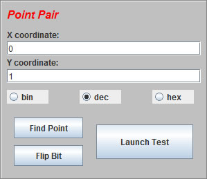

Using the Simulator
Step 1Fill in the elliptic curve parameters or use the default parameters. Note that specified parameters must represent a valid elliptic curve or default parameters will be used. The fields will be filled with default parameters if the user input is invalid. Selecting valid parametersEnter a value for (a,b) between zero (inclusive) and m (exclusive). Enter an irreducible trinomial or pentanomial and enter the degree of the polynomial as m. An example of a valid trinomial is x4 + x + 1 for which m value is 4. Try varying the degree of the polynomial to see how the detection rate changes. This can be as simple as changing the default degree (4) to a greater value in both fields (m and poly) since x^m + x + 1 is irreducible. You may have to adjust (a,b) values to maximize the number of valid points (if Find Point returns the same values, adjust a and b). |
 |
Step 2Choose an output base. This can be changed at any point. |
|
Step 3Enter a point or use the Find Point button. Create a random error by using the Flip Bit button or edit the coordinate fields manually. Finally use the Launch Test button to run the Point on Curve Test and see if the error is detected. Why does it seem all errors are detected?As outlined in the Overview section, the majority of points are invalid. The chance of failing to detect an error is 1/2m and for large values of m it is very small. Note that typical cryptographic applications call for a polynomial of degree greater than 163! The probability of undetected random faults is almost zero with a large degree polynomial. |
 |